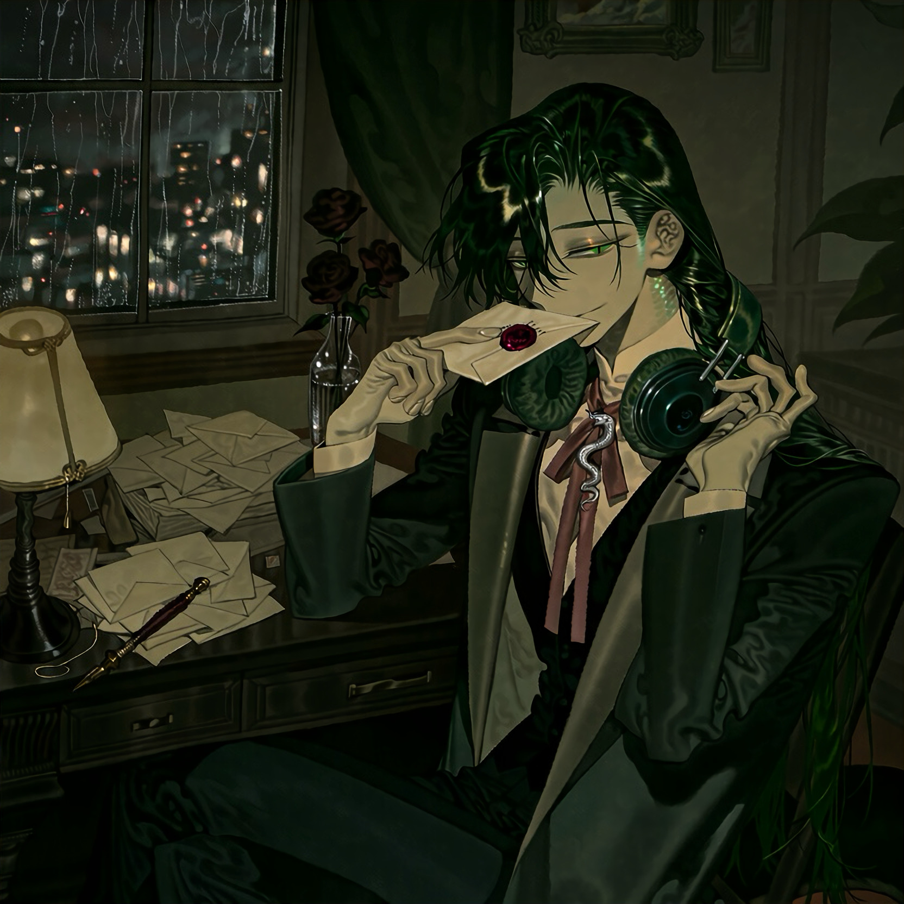

CHARACTER RECORD / 020STATUS: AVAILABLE

✦IMAGE
NOT FOUND
NOT FOUND
モルド
✦ WITH OUTFIT
服装込み
PROMPT DATATXT / 020
masterpiece, best quality, amazing quality, highly detailed anime illustration,
1.5::boy, male humanoid serpent, young adult, slender elegant physique, long neck, narrow shoulders, graceful hands, pale olive skin, subtle green iridescence along the temples and collarbones, narrow emerald eyes with vertical slit pupils, half-lidded eyes, thin eyebrows, slightly downturned eyes, faint enigmatic smile, delicate sharp facial features,
1.4::long dark bottle-green hair,:: silky straight hair reaching the middle of his back, loose strands framing the face, subtle scale-like iridescence in the highlights, one side tucked behind the ear,
subtle serpent scales along the sides of the neck, a long dark green serpentine tail emerging naturally from behind the hips, elegant tapered tail with a muted ivory underside, anatomically coherent humanoid-serpent design,
1.4::refined dark academia fashion,:: tailored charcoal-green long coat with a clean elongated silhouette, high ivory shirt collar, fitted black waistcoat, slim dark trousers, polished black leather boots, muted rose-red silk neck ribbon, antique silver tie pin shaped like a small serpent, restrained detailing, fine wool, smooth leather, matte silk, carefully tailored seams,
1.4::premium over-ear headphones resting around his neck,:: matte dark green earcups, brushed silver accents, understated retro-industrial design,